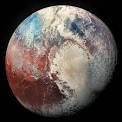

Pluto is named after the Roman god of the underworld. Pluto was reclassified from a planet to a dwarf planet in 2006. Pluto was discovered on February 18th, 1930 by the Lowell Observatory. Pluto has five known moons. Pluto is the largest dwarf planet. Pluto is one third water.